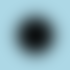
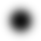
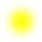
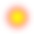
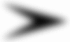

ImageMagick Examples --
 Blurring and Sharpening Images
Blurring and Sharpening Images
- Index
 ImageMagick Examples Preface and Index
ImageMagick Examples Preface and Index
 Blurring Images
Blurring Images
- Blur/Gaussian Arguments
- Blur uses the Channel Setting
- Blur Internals
- Blur vs Gaussian Blur Operators
- Large Blurs using resize
Sharpening Images (Under Construction)
Generating Shadows
- Shaped Shadows
- Shadow Offset Problem
- Shadow and Composite
- Shadow Outlines
- Shadow in the Montage Command
- Shadow Internals
Specialised Blurs
Feathering Shapes using Blur (under construction)
Related Operators (under construction)
Blurring Images
Blurring images so they become fuzzy may not seem like an useful operation, but actually is very useful for generating background effects and shadows. It is also very useful for smoothing the effects of the 'jaggies' to anti-alias the edges of images, and to round out features to produce highlighting effects. Blurring is so important it is an integral part of Image Resizing, though a different method of blurring, which is restricted to within the boundaries of a single pixel of the original image. Their are two general image blurring operators in ImageMagick. The "-gaussian-blur" spread and
"-blur". The results of
the two as very close, but as "-blur" is a faster algorithm, it is generally preferred to the
former even though the former is more mathematically correct. (See Blur vs the Gaussian Blur Operator.)
Blur/Gaussian Arguments
The arguments for "-blur"
and "-gaussian-blur" are the same, but to someone new to image
processing, the argument values can be confusing.
-blur {radius}x{sigma}
The important setting in the above is the second sigma value. It can
be thought of as an approximation of just how much your want the image to
'spread' or blur, in pixels. Think of it as the size of the brush used to
blur the image. The numbers are floating point values, so you can use a very
small value like '0.5'.
The first value radius, is also important as it controls how big an
area the operator should look at when spreading pixels. This value should
typically be either '0' or at a minimum double that of the
sigma.
To show you the effects of the options lets take this simple image, with a lot
of surrounding space (blur operators need lots of room to work), and create a
table of the results for various operator settings. I also purposely used a
font that contains both thick and thin lines see the fuzzing of small line
details and large areas of color.
|
{kind=link}
![[IM Output]](blur_montage.jpg)
|
1' effectively limited the
blurring to within the immediate neighbours of each pixel.
Note that while sigma is a floating point, radius is not. If a
floating point value is given (or internally calculated) it is rounded up to
the nearest integer, to determine the 'neighbourhood' of the blur.
How much each neighbour contributes to the final result is still controlled by
the sigma. A very small sigma (less than '1' )
limits their contribution to a small amount, while a larger sigma
contributes more equal amounts from all the neighbours. The largest
sigma of '65355' will produce a simple averaging of all
the pixels in the square neighbourhood.
Also notice that for smallish radius but a large sigma you see
artifacts appear in the blurred result. This is especially visible in the
output for "-blur 5x8". This is caused by the small square
neighbourhood 'cutting off' the area blurred, producing sudden stops in the
smooth Gaussian curve of the blur, and thus producing Ringing Artefacts along sharp edges. So...
Never use a radius smaller than the sigma for blurs
The ideal solution is to simply set radius to '0x' as
shown by the last line of the above table. In that case the operator will try
to automatically determine the best radius for the sigma given.
The smallest radius IM would use is 3, and is typically 3 * sigma for a
Q16 version of IM (a smaller radius is used for IM Q8, as it has less
precision). The only time I would use a non-zero radius was for a very
small sigma or for specialized blurs. So..
When possible use a radius of zero for blurring operations
Small values for the sigma are typically only used to fuzz lines and
smooth edges on images for which no anti-aliasing was used (see Anti-Aliasing for more info). In that situation
I find a blur of '1x0.3' an useful value to remove most of the
'jaggies' from images.
Large values however are useful for producing fuzzy images, for backgrounds or
shadow effects (see Compound Fonts), or even image
highlighting effects (as shown thought the Advanced
Examples page).
Due to the way IM handles 'x' style of arguments, the
sigma in the above is optional. However it is the more important
value, so it should be radius that is optional, as radius can be
automatically determined. As such a single value argument to these type
of convolution operators is useless. This is unlikely to change as it has been
this way for a very long time, and would break too many things.
Blur uses the Channel Setting
To demonstrate blur, lets start simply by generating a fuzzy black circle on a light blue background...
|  |
{kind=link}
{kind=link}
|
![[IM Output]](black_circle.png)
![[IM Output]](black_blurred.png)
|
-blur" as a grey-scale channel
operator, is limited by the "-channel" setting, to just the three colour channels.
That means only the three color channels of the image were blurred, leaving
the transparency or alpha channel of the image as is.
In the above however, the image is a fully opaque circle on a background
canvas of the color 'none', which IM defines as fully-transparent
black! That which means we have a black circle, on a transparent black
background. In other words an image in which all the colors are black, with
some parts opaque, and other parts
transparent.
Consequently when we blurred the image we only blurred black with black, which
as you can probably guess, produced, black! Thus the result had no change in
color.
Also we never touched the alpha or transparency channel of the image, so we
just ended up with the transparency of the image being unchanged. That is, a
black circle!
What we really wanted to do, is blur all four image channels, particularly the
alpha channel. To do this we set the "-channel" setting to all four
channels of the image (EG: using a value of 'RGBA').
|  |
{kind=link}
Always use a "
-channel RGBA" setting
when blurring images with transparency.
| IM version 5.5.7 would have blurred all four color channels automatically but the operator has other, buggy effects for images with transparency. See Blur with Transparency Bug for more details. |
| Some image formats such as GIF and JPEG do not handle semi-transparent pixels. As such I suggest you use PNG format for any images with some form of semi-transparent colors, if possible. |
-channel" setting is very important for a grey-scale operator such
as "-blur". But is not
the only thing that can be important when using such an operator.
For example lets try that last 'forgot the "-channel" setting' example
again, but this time with a yellow circle.
|
![[IM Output]](yellow_circle.png)
![[IM Output]](yellow_blurred.png)
|
Transparent pixels has Color, even if you can't see it.
In the above case that transparent color was black, which leaked into the
yellow circle.
Of course we can fix this by setting the "-channel" setting correctly for
a transparent image, things do work as expected.
|  |
{kind=link}
Blur Internals
Lets take this step further with a more complicated example, which will let use explore exactly what "-blur" is doing internally.
Here we create a very special image of a yellow circle, which has been drawn
on a fully-transparent red background. This will let us see the effect of a
transparent color has when blurring images.
|
![[IM Output]](yellow_on_red.png)
|
-alpha off" operator.
|
{kind=link}
RGB', "-channel" setting.
|
{kind=link}
|
![[IM Output]](yellow_on_red_RGBA.png)
|
-blur" operator sees that the alpha channel is involved (according
to the current "-channel" setting), it will only blur using the pixels which are
visible according to that alpha channel. If the alpha channel is not
involved, it will completely ignore it, and the fully-transparent red will
blur with the yellow to produce various shades of orange.
Basically the blur algorithm has been modified to ignore all the
fully-transparent pixels in the image, no matter what color they may have.
Any semi-transparent pixels are still involved, but their effect on the result
is also moderated by just how visible they are. The result is that the circle
has become a fuzzy semi-transparent yellow spot. Just what the user probably
was trying to achieve.
If you really like you can blur both the colors and the alpha channel
separately, thus effectually disconnecting the algorithms 'visibility
adjustment' on the color channels. The result is more like a sun
shining through a dirty brown haze.
|  |
{kind=link}
-channel" setting is 'RGB', the default action is not
to blur the alpha channel, and to blur invisible colors with the
visible color within the image.
Aren't you glad that "-blur" is no longer always a pure grey-scale operator. Though you
can use it in that way if you really want. You didn't always have this choice
however...
Before IM version 6.2.4-4, the "-blur", and "-gaussian-blur" operators were applied as pure grey-scale
operation, and as such did not adjust color weighting according to their
alpha channel 'visibility'. The result was that any form of blurring with
transparency, almost always produced horrible 'black halo' effects, such as
purposefully generated in the previous example.
This was classed as a major long term bug within the IM distribution, and
one that was very hard to workaround. For more details of this problem,
see the Blur with Transparency Bug page.
|
FUTURE: Blur and Trimming Images.
Blur vs Gaussian Blur Operators
There has been some confusion as to which operator, "-blur" or the "-gaussian-blur" is better
for blurring images. First of all "-blur" is faster, but it does this using two stage technique.
First in one axis, then in the other. The "-gaussian-blur" operator
on the other hand is more mathematically correct as it blurs in all directions
simultaneously. The speed cost between the two can be enormous, by a factor of
10 or more, depending on the amount of bluring involved.
In a more technical context, "-blur" is a 2 pass, 1 dimensional orthogonal convolution filter,
while "-gaussian-blur" is a 2 dimensional cylindrical convolution filter.
See Convolution for more details.
The results of the two method should be the same, unlike the use of other
'filtered' convolution operations. However the two pass system means that
there is an intermediate stage in which rounding, or quantum effects, can
occur.
Cristy also bears this out when he reported... You should always use "-blur" instead of "-gaussian-blur" because
its faster. Some pixels will be different on the interior due to rounding,
and the edge pixels may be different because of loss of Virtual Pixel edge effects, again in the
intermediate stage.
In summary, the two operators are slightly different, but only minimally. As
"-blur" is much faster,
use it. I do in just about all the examples involving blurring.
Large Blur using Resize
Using large sigma values for image bluring is very slow. But onw technique can be used to speed up this process. This however is only a rough method and could use some mathematicaly rigor to improve results. Essentually the reason large blurs are slow is because you need a large window or 'kernel' to merge lots of pixels together, for each and every pixel in the image. However resize (making image smaller) does the same thing but generates fewer pixels in the process. The technique is basically shrink the image, then enlarge it again to generate the heavilly blured result. The Gaussian Filter is especially useful for this as you can directly specify a Gaussian Sigma define. For example, here I blue the small rose image by a sigma value of 5 using the two methods.
magick rose: -blur 0x5 rose_blur_5.png
magick rose: -filter Gaussian -resize 50% \
-define filter:sigma=2.5 -resize 200% rose_resize_5.png
|
{kind=link}
Sharpening Images

The most important factor is the sigma. As it is the real control of the sharpening operation. It is only due to historical accident it is the second term in the above. It can be any floating point value from .1 for practically no sharpening to 3 or more for sever sharpening. 0.5 to 1.0 is rather good. Radius is just a limit of the effect as is the threshold. Radius is only in integer units as that is the way the algorithm works, the larger it is the slower it is. But it should be at a minimum 1 or better still 2 times the sigma.First forget the first number, just use 0 which will then use the best number for the 'sigma' factor you give. The larger the sigma the more it sharpens.
| -sharpen 0x.4 | very small |
| -sharpen 0x1.0 | about one pixel size sharpen |
| -sharpen 0x3.0 | probably getting too large |
-sharpen" operator
is sort of an inverted blur. In fact it works in just about the same way. For
examples which show how this is related to blur see, Image
Processing By Interpolation and Extrapolation.
For example lets blur a simple image then attempt to sharpen it again
to remove the blur.
magick -font Gecko -pointsize 72 label:A A_original.jpg magick A_original.jpg -blur 0x3 A_blur.jpg magick A_blur.jpg -sharpen 0x3 A_blur_sharp.jpg magick A_blur_sharp.jpg -sharpen 0x3 A_blur_sharp_x2.jpg |
![[IM Output]](A_original.jpg)
{kind=link}
{kind=link}
{kind=link}
Unsharp Images
-sharpen",
and "-unsharp"
operators, work using the exact same technique of subtracting a blur from
the original image.
For the internal details of how both "-sharpen", and "-unsharp" actually work see Unsharpen Convolution.
{kind=link}
From comments on Sharpening with ImageMagick from Alex Beels Matching GIMP unsharp Take gimp radius and add 1 => IM sigma Threshold divide by 255 => IM Threshold So GIMP radius=2 amount=1.5 threshold=5 results in -unsharp 0×3+1.5+0.0196 Another suggested that im_sigma = sqrt(gimp_radius) Raw notes from Fred Weinhaus Blur Image for test. A_original.jpg magick A_original.jpg -blur 0x3 A_original_blur3.jpg sharpen is just a gaussian type blurred image subtracted from the image to make an edge image (high pass filter), then equally blends that back with the original, so one has a high pass enhanced image. magick A_original_blur3.jpg -sharpen 0x3 A_original_blur3_sharp3.jpg unsharp is more complex. It is similar. It takes the difference (edge result) as above, i.e. like sharpen BUT only blends some fraction or multiple of that with the original image, AND only if the difference is above a threshold. Thus unsharp 0x3+1+0 is basically the same as sharpen 0x3 magick A_original_blur3.jpg -unsharp 0x3+1+0 A_original_blur3_unsharp3_1_0.jpg compare -metric rmse A_original_blur3_sharp3.jpg A_original_blur3_unsharp3_1_0.jpg null: 164.661 (0.00251256) The difference may be due to whether one uses a separable (gaussian) blur filter or not in one or the other but not both. Or it could be just some slight differences elsewhere in the IM implementation. If one blends less with the original, one gets less sharpening. magick A_original_blur3.jpg -unsharp 0x3+0.5+0 A_original_blur3_unsharp3_0p5_0.jpg If one blends more with the original, one gets more sharpening. magick A_original_blur3.jpg -unsharp 0x3+2+0 A_original_blur3_unsharp3_2_0.jpg If one increases the threshold, then one gets less sharpening again. magick A_original_blur3.jpg -unsharp 0x3+2+0.2 A_original_blur3_unsharp3_2_0p2.jpg Several of my (Fred's) scripts, binomialedge, gaussianedge, sharpedge use this blending concept (between the high pass filtered result and the original image) and a description is there with the scripts. The thresholding in my scripts is done differently and for a different purpose. Sharpen using de-convolution There is a technique of using de-convolution (division in a Fast-Fourier generated frequency form of images), This works best when the exact 'blur' that was applied to the original image is known, or calculated in some way. At the moment only raw 'DIY' methods are as yet available in IM and a number of such methods are demonstrated (trialed) in the sub-section Fourier Multiply/Divide.
Generating Shadows
The "-shadow" operator
is an advanced operator that was developed with the IM example pages.
Basically it represents a very complex blur and re-coloring of transparency
shape of the given image. This is an operation that IM users performed all
the time, but required a good deal of knowledge to figure how to achieve
correctly.
The operator will take an image (usually a clone, and may already have some
transparency) and magick it into a shadow image that can then be positioned
under the original image at given offset, (generally by using the special Layer Merge operator.
Here for example is a standard method of shadowing an existing image, using a
navy shadow color to match this web page.
|
![[IM Output]](shadow.png)
|
|
{kind=link}
-layers
merge" to layer shadow images with the original image makes it easy to
generate shadows from a light source from any direction, not just the upper
left side.
|
![[IM Output]](shadow_other.png)
|
+repage" removing any negative or
positive offset that may be present in the resulting 'layer' image. See Shadows and the Offset Problem for alternative
techniques.
The Layers Merge method was added to IM
v6.3.6-2. Before this you would need to use the similar layer flattening
operator "-mosaic"
instead. However this operator has problems (see next).
|
Shaped Shadows
Now "-shadow" was designed
with shaped images in mind, (and this is the reason for its complexity).
For example, here is a typical shadowed font.
|
![[IM Output]](shadow_a.png)
|
DstOver' composition method so as to
avoid the need to swap the order of the two images.
{kind=link}
Shadows and the Offset Problem
The problem with shadow is that a blurry shadow extends in all directions. To compensate the "-shadow"
operator enlarges the actual original image by adding a border 2 times the
size of the blur 'sigma' value given. That is, if you blur a shadow
using 'x3', it will enlarge the image by 12 pixels (2 times 3
pixels on every side).
To compensate for this enlargement, a shadow image is also given an
appropriate negative Virtual Canvas Offset so
that it will be positioned correctly relative to the image being shadowed. For
a normal image that means the shadow image generated will have a negative
offset.
This however generates a problem when your IM does not have a the "-layers" method
'merge' available. For example, here we try to add a shadow on
the left side, of the image as if a light shone from the upper right.
|
{kind=link}
-mosaic" operator, because of the
negative offset. Not good!
One solution is to add an initial offset to the original image so the
resulting shadow images offset will not be negative.
|
![[IM Output]](shadow_left.png)
|
-mosaic" them together. Note the
use of a '!' flag with "-repage" to add the given offset to both images.
|
![[IM Output]](shadow_tl.png)
|
|
![[IM Output]](shadow_space.png)
|
Note that while the "-compose Over" setting is not actually
needed in the above, it is recommended. Otherwise later operations (even in
other "magick" commands) could be effected, with unexpected
results. That is, a non-standard compose setting can effect other
operations, including: image layering, adding borders, or frames, or simply
other compositions.
|
Shadows and Composite
Many people on the forums generate a shadow image and then try to use the lower-level "-composite" to merge the images. For example directly overlay the
original image onto a generated (larger) shadow image.
|
{kind=link}
-gravity Center" setting, as the enlarged shadow image is expanded
equally on all sides.
|
{kind=link}
Shadow Outlines
You can also use "-shadow" to generate a fuzzy outlines of shapes, such as text.
By using Layers Merge IM will automatically
add the extra space needed for the semi-transparent blur.
|
{kind=link}
|
{kind=link}
-shadow"
generated offsets (using "+repage"), and center overlaid the original image on the larger
shadow image.
By adding a "-geometry" composition offset you can then offset the shadow as
a separate action.
|
{kind=link}
x0' blur
'sigma'), unless you include some padding space to the shadow image for the
original image to be overlaid. With a soft fuzzy shadow however that is rarely
a problem.
For some practical examples of shadowing see Thumbnail shadowing and Better 3-D
Logo Generation.
Shadow in the Montage Command
As of IM v6.3.1 the "magick montage" "-shadow" setting, started to make
use of the soft 'shaped' shadows this operator provides.
|
![[IM Output]](shadow_montage.png)
|
magick montage" never did provide such controls, beyond
a simple on/off option.
Shadow Internals
Internally "-shadow" is
extremely complex. Basically not only does it need to enlarge an image to
accommodate a 'soft blurry shadow', but it also needs to blur the existing
shape of the image, set its color appropriately, and finally adjust virtual
page/canvas offsets; all to the users specifications.
For example given the following "-shadow" command...
magick image_clone.png -shadow 60x4+5+5 image_shadow.png
|
magick image_clone.png -alpha set \
-bordercolor none -border 8 -repage -8-8\! \
-channel A -virtual-pixel transparent \
-blur 8x4 -evaluate multiply .60 +channel
-fill {background_color} -colorize 100% \
-repage +5+5\! image_shadow.png
|
| The PNG, and MIFF formats are the only image formats I know that can handle a negative offset, as well as semi-transparent pixels. I recommended PNG be used if saving shadow images, for future use. |
-shadow" is a
very complex operation.
Of course while the above example is close to what "-shadow" does internally, it is
not exactly the same.
The actual "-shadow"
operator, does not change any of the global settings, such as
border/background/fill colors, or the current virtual-pixel setting. Also it
will short circuit the use of the "-blur" operator if the blur sigma is set to 0, to prevent
the blur function from giving a warning for a zero sigma or radius.
FUTURE: overlaying multiple shadows Overlaying two images with shadows, produces an unrealistic darkening of the shadow where the shadow overlaps. This darkening would be correct if each object was lit by separate light sources, but more commonly the objects are lit by the same light source. The solution is to overlay the one image over the other, applying the shadow effects to the opaque parts of each layer image in turn. That is, the background shadow should be generated separately into each layer. Remember the shadow cast by the top most layer should become fuzzier than the shadow contribution of the bottom most layer. This complexity gets worse when you have three objects shadowing each other. Also the offset and blurring from the shadow of each object should technically be separate. To generate that level of complexity, probably a 3-d ray-tracing program should be used instead (sigh).
Specialized Blurs
There are a few other sorts of blurs that have been added to IM version 6, which have very special uses. These operate in specific ways, and not in all directions as most other 'convolve'-style operations do. They also may not work as well as other methods of generating specialized blurs, such as distorting images before and after an more normal blur. For example see Polar Cycle Tricks, and Elliptical (mapped) Blurring.
WARNING: All these blurs are experimental, and syntax may change!
Radial Blur
You can blur the image around in a circle using a "-radial-blur", as if it was
spinning around and around. Though technically this is a rotational or
angular blur, rather than a radial blur.
NOTE:You can achieve a much higher quality result (though at a much
slower speed) using a Depolar-Polar
- Rotational Blur technique.
Note however that like a normal "-blur" operator, "-radial-blur" is affected by the "-channel" setting.
|
{kind=link}
-radial-blur" effects.
|
![[IM Output]](radial_blur_90.png)
|
|
{kind=link}
|
![[IM Output]](radial_blur_360.png)
|
|
{kind=link}
The full circle radial blur, can be used to generate a rough circular
gradients. However formulating the correct shape to generate the correct
gradient can be extremely difficult, and probably not worth the effort.
I did try though...
|
![[IM Output]](radial_gradient.gif)
|
{kind=link}
Motion Blur
You can add a linearly fading blur in one direction only (giving a radius and sigma, plus an the angle in which the blur should occur), by using a "-motion-blur".
This gives your image a look as if it (or the camera) was moving very very
fast.
|
![[IM Output]](motion_blur.png)
|
-motion-blur" multiple times.
|
![[IM Output]](motion_blur_redraw.png)
|
|
![[IM Output]](motion_blur_spread.png)
|
|
![[IM Output]](motion_wave.png)
|
Note that while "
-radial-blur" blurs in both directions, "-motion-blur" only
blurs in one direction.
In both cases I recommend you pad your image with extra space around the edge
(generally using "-border") as both of these specialized blurs have strong edge
effects that is best to avoid.
If you find a more practical or interesting example or use of the above please
email me a copy (address in footer of page).
Feathering Shapes using Blur
For example, here I have a GIF image which I overlay a light colored baground
|
![[IM Output]](overlaid.png)
|
But by bluring the image transparency a little, I can make the overlay
fit onto the background more smoothly.
|
![[IM Output]](edge_blured.png)
|
Note that as blur extends both into and out of the shaped area, the alpha channel has to be adjusted so that the edge of the shape is zero (fully-transparent). but quickly becomes fully-opaque as to get further from the edge. An example of just such an alpha channel adjustment is provided by CLUT with Transparency Handling This adjustment is critical, otherwise instead of de-emphasizing the area outside the shape, you add a semi-transparent shadow or halo of the area outside the shape. Basically some semi-tranparent 'undefined color' that was previously hidden by the image transparency. However blur has a particularly nasty problem in also smoothing the outline of the shape. For example...
|
{kind=link}
|  |
{kind=link}
|
![[IM Output]](feather_blur_thres.gif)
|
Related Operators
Basic image modifications
-despeckle -enhance
-noise -spread -displace
-median
Set each channel color of the pixel to the median value of all all pixels
within a given radius. (median = center most value of all values found,
half on one side, half on the other). This is a way of "de-speckling" an
image (such a dust in a scan). But could distort edges, cause some color
channel aburation, and remove thin lines.
This filter is the best technique to use for removing Salt & Pepper
noise, especially on gray scale images.
It is suggested that a trim for a scan use a median filtered image for
attempting to find the appropriate bounding box.
-adaptive-sharpen radius x sigma
Adjust sharpening so that it is restricted to close to image edges
as defined by edge detection.
See forum discussion
https://imagemagick.org/discourse-server/viewtopic.php?f=1&t=10266
-adaptive-blur radius x sigma
Blur images, except close to the edges as defined by an edge detection
on the image. Eg make the colors smoother, but don't destroy any
sharp edges the image may have.
-adaptive-resize
Resize but attempt not to blur across sharp color changes